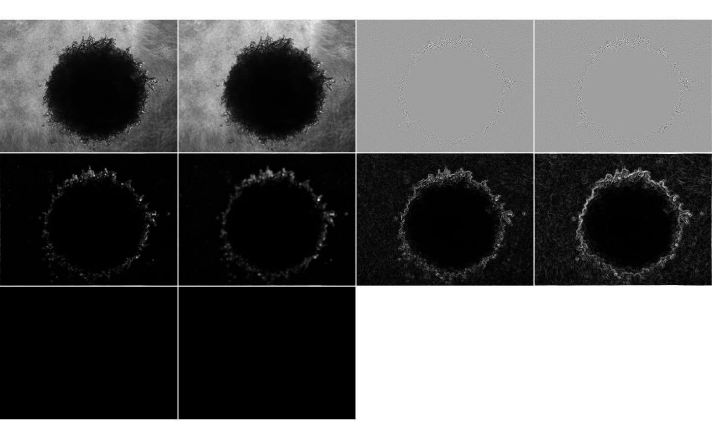

performance
time_performance.RmdImage Pre-processing
We will start with the same files as the ones in the readme
params_df <- tibble::tibble(
file = c(
system.file(
"extdata", "tiny_4T1-shNT-1_layer1.png",
package = "clasifierrr"),
system.file(
"extdata", "tiny_4T1-shNT-1_layer2.png",
package = "clasifierrr")),
classif = c("spheroid", "bg"),
related_file = system.file(
"extdata", "tiny_4T1-shNT-1.png",
package = "clasifierrr")
)
params_df
#> # A tibble: 2 x 3
#> file classif related_file
#> <chr> <chr> <chr>
#> 1 /tmp/RtmpQW5j8f/temp_libpath49b6… sphero… /tmp/RtmpQW5j8f/temp_libpath49b643b…
#> 2 /tmp/RtmpQW5j8f/temp_libpath49b6… bg /tmp/RtmpQW5j8f/temp_libpath49b643b…
time_taken_full <- system.time({
features <- calc_features(
base_image,
filter_widths = c(3,5))
})
#> Starting to calculate features for image of width 154 and height 205
#> Filters of size: {3,5}
#>
#> Attaching package: 'purrr'
#> The following object is masked from 'package:EBImage':
#>
#> transpose
#>
#> Took 0.62 secs to calculate the 7 features for 31570 pixels
time_taken_full
#> user system elapsed
#> 0.552 0.043 0.627
object.size(features)
#> 1769440 byteswe can notice that it takes 0.627 seconds to achieve the calculation and the features object ocupies 1.7 Mb.
Nonetheless, since we basically are doing one calculation per pixels, per filter, decreasing the number of pixels would decrease the number of calculation by that number. And therefore, decreasing the size will accelerate the speed with the square of that reduction (since its a 2d image)
newsize <- as.integer(ncol(base_image)/2)
shrunk_image <- resize(base_image, w = newsize)
time_taken_shrunk <- system.time({
shrunk_features <- calc_features(
shrunk_image,
filter_widths = c(3,5))
})
#> Starting to calculate features for image of width 58 and height 77
#> Filters of size: {3,5}
#>
#> Took 0.11 secs to calculate the 7 features for 4466 pixels
time_taken_shrunk
#> user system elapsed
#> 0.105 0.000 0.109
object.size(shrunk_features)
#> 251616 byteswe can notice that now it takes 0.109 seconds to achieve the calculation and the shrunk_features object ocupies 0.2 Mb.
which is a 5.7522936 fold decrease in time and 7.0323032 decrease in used memmory
lets take a look at the actual filters …
image_shrunk_list <- purrr::map(names(features), ~ Image(shrunk_features[[.x]], dim(shrunk_image)))
image_full_list <- purrr::map(names(features), ~ Image(features[[.x]], dim(base_image)))
display(combine(image_shrunk_list), method = "raster", all = TRUE)

Note how, since the filter sizes are still the same, but the image size is different, the filters have slightly different effects.
now … I have implemented a way to make this automatic for the multiple case set.
For that you need to write a function that does the processing you want and pass it as an argument to preprocess_fun_img and preprocess_fun_mask
half_image <- function(x) {
newsize <- as.integer(ncol(x)/2)
shrunk_image <- resize(x, w = newsize)
return(shrunk_image)
}multi_time_full <- system.time({
trainset <- build_train_multi(
params_df,
train_size_each = 5000,
filter_widths = c(3,5))
})
#> Returning for file: /tmp/RtmpQW5j8f/temp_libpath49b643b8a904b/clasifierrr/extdata/tiny_4T1-shNT-1_layer1.png and classification" spheroid " a total of { 8556 } positive pixels
#> Returning for file: /tmp/RtmpQW5j8f/temp_libpath49b643b8a904b/clasifierrr/extdata/tiny_4T1-shNT-1_layer2.png and classification" bg " a total of { 14056 } positive pixels
#> Starting to calculate features for image of width 154 and height 205
#> Filters of size: {3,5}
#>
#> Took 0.11 secs to calculate the 7 features for 31570 pixels
#> Classified objects are of classesbg: 3132 and spheroid: 1868
#> Returning a data frame of 5000 rows and 8 columns
multi_time_shrunk <- system.time({
trainset <- build_train_multi(
params_df,
preprocess_fun_img = half_image,
preprocess_fun_mask = half_image,
train_size_each = 5000,
filter_widths = c(3,5))
})
#> Returning for file: /tmp/RtmpQW5j8f/temp_libpath49b643b8a904b/clasifierrr/extdata/tiny_4T1-shNT-1_layer1.png and classification" spheroid " a total of { 1382 } positive pixels
#> Returning for file: /tmp/RtmpQW5j8f/temp_libpath49b643b8a904b/clasifierrr/extdata/tiny_4T1-shNT-1_layer2.png and classification" bg " a total of { 2171 } positive pixels
#> Starting to calculate features for image of width 58 and height 77
#> Filters of size: {3,5}
#>
#> Took 0.11 secs to calculate the 7 features for 4466 pixels
#> Warning in build_train(feat_img = calc_features(preprocess_fun_img(readImageBw(.x)), : The selected train size(5000) is larger than the number of classified pixels (3541) so the number is getting updated to the total number of available pixels
#> Classified objects are of classesbg: 2171 and spheroid: 1370
#> Returning a data frame of 3541 rows and 8 columns
multi_time_full
#> user system elapsed
#> 0.233 0.005 0.241
multi_time_shrunk
#> user system elapsed
#> 0.335 0.000 0.345
head(trainset)
#> gauss_filt_3 gauss_filt_5 gauss_diff_3 var_filt_3 var_filt_5 sobel_filt_3
#> 1 0.39662964 0.39137500 -0.010509290 3.4939578 8.289762 0.230601755
#> 2 0.38794884 0.38691600 -0.002065682 3.3596586 7.849096 0.062557886
#> 3 0.43497138 0.43941439 0.008886012 3.7789415 8.982805 0.028298007
#> 4 0.20383469 0.21102109 0.014372797 1.5408059 3.962755 0.739107435
#> 5 0.05885169 0.09350353 0.069303678 0.4891775 1.127104 0.006794838
#> 6 0.45016661 0.43226102 -0.035811175 4.4143674 10.025842 0.098017116
#> sobel_filt_5 pixel_class
#> 1 0.68236135 bg
#> 2 0.32878834 bg
#> 3 0.48002046 bg
#> 4 2.22535731 spheroid
#> 5 0.06681942 spheroid
#> 6 0.90801819 bgIn this case it would be a increase in 0.6985507 times of computation.
Preprocessing functions can be much more complicated …
preprocess_img <- function(x) {
x <- correct_light(x, chunk_width = 11)
x <- half_image(x)
x <- x - min(min(x), 0)
x <- x/max(x)
return(x)
}
preprocessed_image <- preprocess_img(base_image)
display(base_image, method = "raster")

multi_time_shrunk <- system.time({
trainset_preproc <- build_train_multi(
params_df,
preprocess_fun_img = preprocess_img,
preprocess_fun_mask = half_image,
train_size_each = 1000,
filter_widths = c(3,5))
})
#> Returning for file: /tmp/RtmpQW5j8f/temp_libpath49b643b8a904b/clasifierrr/extdata/tiny_4T1-shNT-1_layer1.png and classification" spheroid " a total of { 1382 } positive pixels
#> Returning for file: /tmp/RtmpQW5j8f/temp_libpath49b643b8a904b/clasifierrr/extdata/tiny_4T1-shNT-1_layer2.png and classification" bg " a total of { 2171 } positive pixels
#> Starting to calculate features for image of width 58 and height 77
#> Filters of size: {3,5}
#>
#> Took 0.11 secs to calculate the 7 features for 4466 pixels
#> Classified objects are of classesbg: 627 and spheroid: 373
#> Returning a data frame of 1000 rows and 8 columns